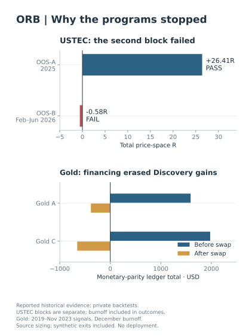

Opening Range Breakout (ORB)
Does the opening range tell us more than the time of day?
The Nasdaq candidate passed its first validation block and failed its second. In a separate gold study, the implementations agreed, but financing erased the discovery gains of both candidates in the monetary comparison.
Limitation Some successor candidates never reached an out-of-sample test and still have no verdict.
Tested branches closed for deployment.
Read the ORB study